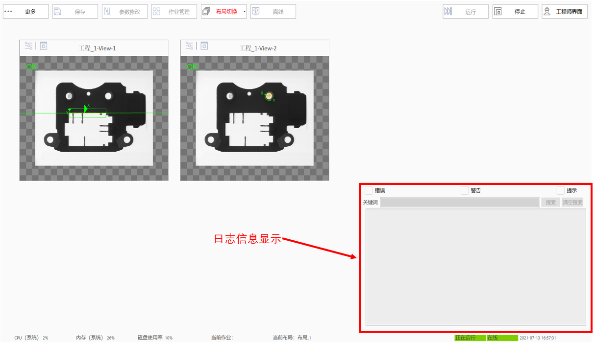
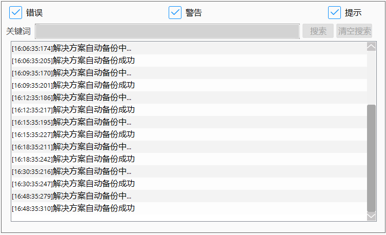
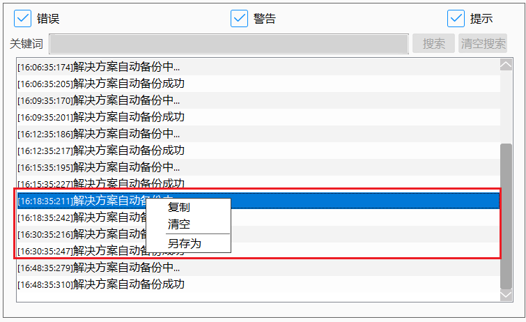
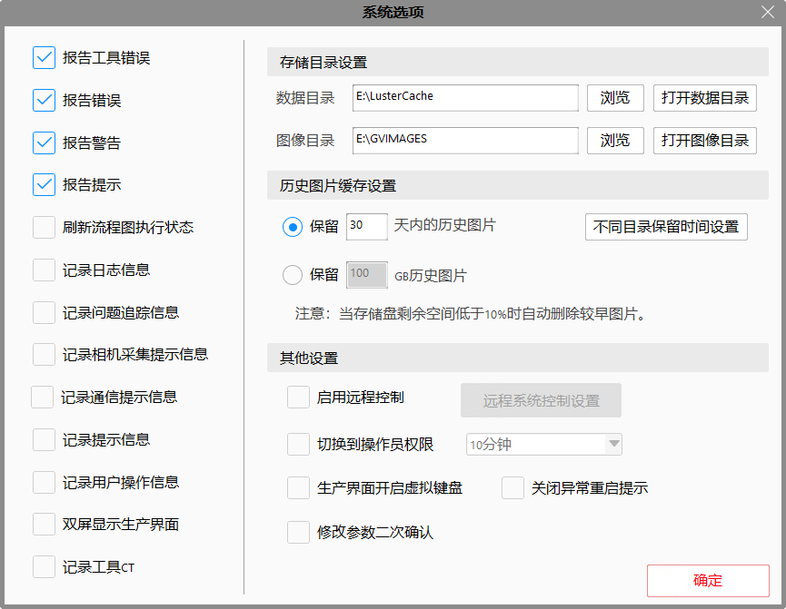

Bằng cách nhấp vào giao diện sản xuất, bạn có thể xem cửa sổ hiển thị thông tin nhật ký trong giao diện, như hình dưới đây:

Trong đó, các chức năng cụ thể của cửa sổ hiển thị nhật ký như sau:

Lỗi: Chỉ các thông tin lỗi trong loại nhật ký.
Cảnh báo: Chỉ các thông tin cảnh báo trong loại nhật ký.
Gợi ý: Chỉ các thông tin gợi ý trong loại nhật ký.
Ba loại nhật ký trên đều có hai trạng thái: được chọn hoặc không được chọn. Khi được chọn, thông tin thuộc loại đó sẽ được hiển thị; khi bỏ chọn, loại thông tin đó sẽ không hiển thị.
Chỉnh sửa từ khóa: Trong ô nhập liệu, nhập từ khóa cần tìm để tìm kiếm thông tin nhật ký mục tiêu.
Tìm kiếm: Dùng từ khóa đã nhập để định vị và tìm kiếm thông tin nhật ký.
Xóa tìm kiếm: Xóa nội dung trong ô từ khóa, vùng hiển thị nhật ký sẽ khôi phục về trạng thái lọc theo loại nhật ký.
Vùng hiển thị thông tin nhật ký: Dùng để hiển thị thông tin nhật ký sau khi lọc. Tối đa hiển thị 512 dòng; nếu vượt quá, chỉ hiển thị 512 dòng mới nhất.
Chọn và sao chép thông tin nhật ký: Trong vùng hiển thị nhật ký, có thể nhấp chuột hoặc kéo chọn (hỗ trợ phím Ctrl, Shift) để chọn nhiều dòng; nhấp chuột phải để thực hiện chức năng sao chép.

Lưu thông tin nhật ký thành tệp: Trong vùng hiển thị nhật ký, nhấp chuột phải và chọn “Lưu thành...”, có thể lưu thông tin nhật ký hiện tại. Định dạng lưu là tệp .txt.
[Ghi chú]
